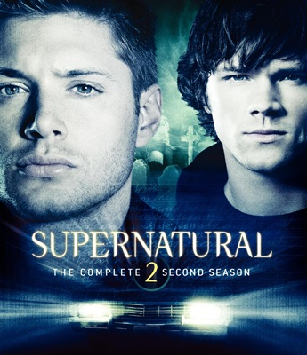
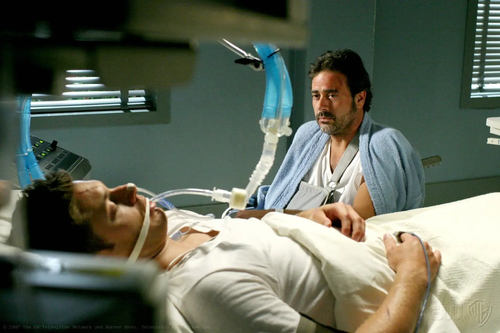
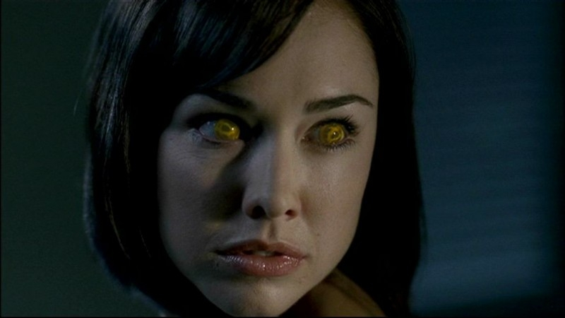
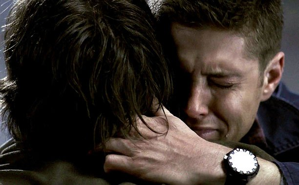
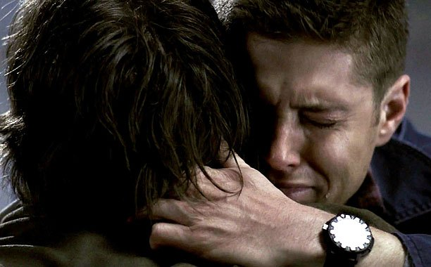
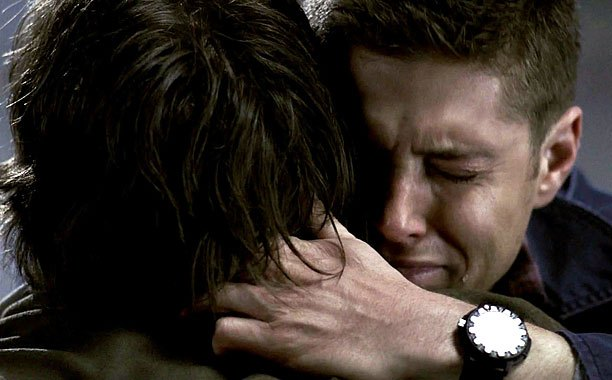
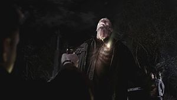
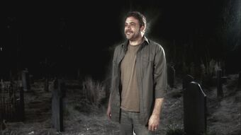

Temporada 2

Sam e John se recuperam do acidente, mas Dean está morrendo, levando John a fazer um pacto com
o demônio Olho Amarelo (Mais tarde descobre-se que seu nome é Azazel), que matou Mary,
dando-lhe o Colt e a sua alma em troca da vida de Dean. No decorrer da temporada, torna-se
claro que o Olho Amarelo tem grandes planos para Sam. Na noite em que Mary morreu e Sam foi
infectado com sangue, que era de demônio, Sam adquiriu habilidades psíquicas desenvolvidas
nesta temporada. Mas Sam não foi o único, havia outras crianças. Quando John fez o pacto com o
Olho Amarelo, houve uma conversa e John já sabia os planos para as “crianças videntes”, tanto
que antes de morrer, no hospital, John se debruça até o ouvido de Dean e pede para que ele salve
Sam, caso não conseguisse, deveria matá-lo, como Dean revelou para Sam no episódio 10, Hunted.


Os irmãos também conhecem Ellen, Jo, Ash e Bobby, velhos amigos da família, que os ajudam em
caçadas. No penúltimo episódio desta temporada, o Olho Amarelo reúne todas as “crianças
videntes” em uma vila abandonada para que lutem entre si, até que haja apenas um sobrevivente.
Sam é morto por Jake, o vencedor, sucumbindo nos braços de Dean. Para ressuscitar Sam, Dean
vende a alma. Ao descobrir que o vencedor entre as “crianças videntes” terá de abrir o Portal
do Inferno, Sam e Dean, juntamente com Bobby e Ellen, tentam impedir Jake de abrir o Portal,
mas não conseguem, e são libertos vários demônios, entre eles estão Ruby, Alastair e Lilith.
 


Quando o Olho Amarelo estava prestes a matar Dean, John sai do Portal do Inferno e o impede
(abraçando a forma demoniaca de Azazel e o retirando do corpo de seu receptaculo) Quando Azazel
volta para o corpo do se receptaculo, Dean atira com a Colt no ombro dele, o matando,
definitivamente. John consegue sair do inferno, mas não se sabe para onde se foi.

